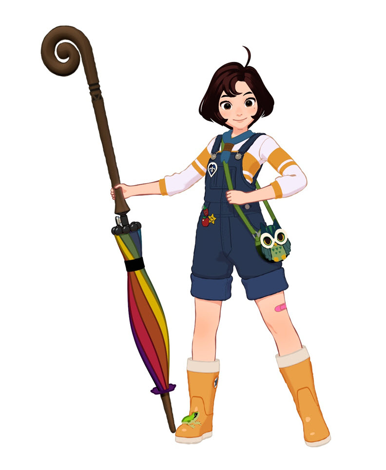
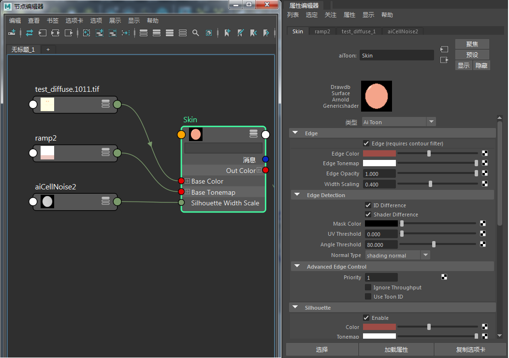
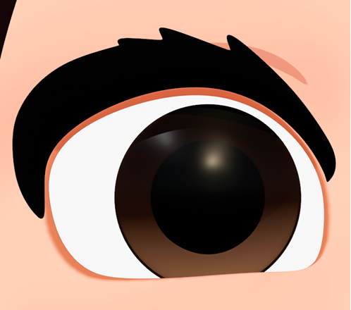
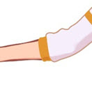
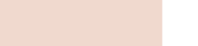
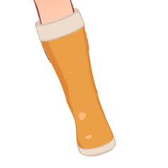
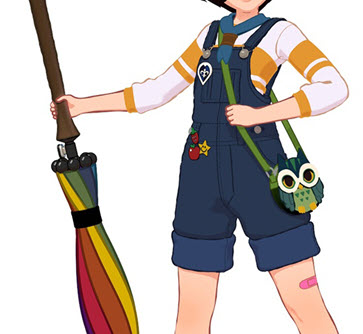

制作 Sophie

在此制作教程中，我们将分步介绍如何使用卡通着色器渲染上图。我们将介绍如何使用卡通着色器的 *rim_lighting、*base_tonemap、specular_tonemap 和 stylized_highlight 属性。此外，还将介绍如何在 edge_width 中添加变化，以创建更具有说明性的样式。
该模型由 Jaeyeon Nam 友情提供。原始概念由 Hong SoonSang 提出。
确保在对卡通边进行渲染时“过滤器类型”(Filter Type)（渲染设置）设置为“轮廓”(Contour)。
要下载场景文件，请单击此处。
照明
创建一个 skydome_light*，并将 *physical_sky 着色器连接到其“颜色”(Color)属性。将“曝光”(Exposure)*增加到 2 左右。将 *physical_sky 的“仰角”(Elevation)更改为 30 左右。这将用作主要照明，但稍后我们还将添加一个平行（远距离）光，以在她的靴子、纽扣等上创建风格化高光。
本教程按 Sophie 的多个部分分别进行介绍，这些部分均需要注意使用特定着色。我们将从上到下进行介绍。
头发
- 为头发几何体指定卡通着色器。
- 禁用边，因为不需要使用它。
- 将 base_color 更改为深褐色。
- 要在头发上呈现高光，我们需要将渐变连接到 specular_tonemap。更改渐变，使其看上去像下面的渐变，图中白色为头发的亮显区域。确保渐变中没有插值，因为我们希望头发上呈现强光泽外观的高光。
| 未使用基础色调映射（默认值） | 渐变 -> 基础色调映射 |
皮肤
- 为头部和身体几何体指定卡通着色器，然后将其重命名为 Skin。
- 将贴图 test_diffuse
.tif 连接到 _base_color_。 - 将如下所示的渐变连接到 base_tonemap*。确保它的皮肤色调较暗，以使 *base_tonemap 可见。
| 未使用基础色调映射（默认值） | 渐变 -> 基础色调映射 |

- 将边颜色更改为褐色。
- 将 angle_threshold 减小到 80 左右。这样，将在嘴、鼻子和下巴周围获得满意的边细节量。
| 角度阈值：180（默认值） | 角度阈值：80 |

皮肤卡通着色器设置
眼
眼球
- 为眼球几何体指定卡通*着色器。将 *base_weight 减小到 0，并将 emission_weight 增加到 1。这样将获得纯白色。
虹膜
- 为眼睛的虹膜多边形面指定 standard_surface 着色器。此处不需要 toon_edge 着色器，因此 standard_surface 着色器应足够了。
- 将褐色梯度渐变连接到 base_color*，并将 *specular_weight 减小到 0（我们将向角膜着色器添加镜面反射度）。
角膜
- 为角膜几何体指定卡通着色器。
- 禁用边，因为皮肤与眼睛相交处已经存在一个边。
- 将 base_weight 减小到 0。将 specular_color 更改为深灰，将 specular_roughness 增加到 0.3 左右。
- 将 transmission_weight 增加到 0.9 左右（如果使其完全透明，则意味着将没有镜面反射高光）。
- 将 indirect_diffuse 和 indirect_specular*（“高级”(Advanced)）*减小到 0（我们不希望眼球内部发生任何间接着色）。

眼球、虹膜和瞳孔几何体
套衫
- 为套衫指定两个卡通着色器（一个白色，一个用于橙色条纹）。
- 为套衫的 base_color 添加淡紫色色调，为条纹的 base_color 添加橙色。
- 将渐变连接到 base_tonemap（对两个着色器使用相同的渐变）。
- 将橙色套衫着色器的“优先级”(Priority)（“高级边缘控制”(Advanced Edge Control)）更改为 1。我们希望其高于皮肤的优先级，否则，套衫与皮肤相交处将出现边。
|  | |
| 套衫优先级：0（出现不需要的皮肤边） | 套衫优先级：1 |
靴子
- 为塑料橙色靴子指定卡通着色器。
- 将渐变连接到 base_tonemap。

为了在 Sophie 的靴子上呈现光泽高光，我们可以使用 stylized_highlight。
- 创建带方向性的（远距离）灯光，并使其所处的角度位置类似于 physical_sky（需要通过眼睛执行此操作）。
- 在 stylized_highlight 下输入此带方向性的灯光的名称（根据您使用的 Arnold 插件，这可能会有所不同）。 有关正确的命名约定，请查看卡通文档。例如，在 MtoA 中，它将是
directionalLightShape1 - 将 stylized_highlight 的大小增加到 0.2 左右。

靴子上的 stylized_highlight
轮廓
现在差不多了。但是，卡通边看起来太清晰和完美。我们需要分解 edge_silhouette，以产生手绘效果。
- 对主要着色器（例如牛仔裤、靴子、杆等）启用轮廓。
- 使每个着色器的 silhouette_color 与 edge_color 一致。
- 创建一个 cell_noise 着色器，并将其连接到边 -> 轮廓 -> width_scale。将图案更改为 worley1。在本例中，“比例”(scale)已更改为 0.2。您可能希望根据期望的外观来尝试不同的“图案”(pattern)和“比例”(scale)设置。您还可以使用“偏移”(Offset)来更改噪波沿边的位置。“随机度”(Randomness)等属性对边厚度外观的影响巨大。
|  | |
| 使用 cell_noise -> silhouette_edge | 未使用 |